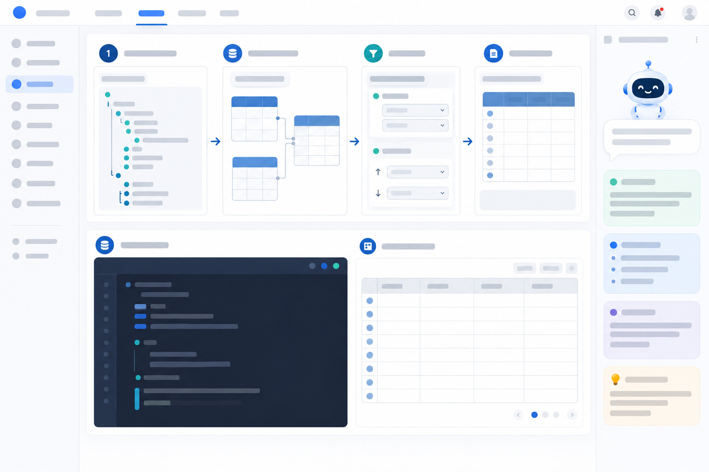

SELECT p.id, p.title, m.nickname AS authorNickname,
p.like_count AS likeCount,
p.comment_count AS commentCount,
p.published_at AS publishedAt
FROM board b
JOIN post p ON p.board_id = b.id
JOIN member m ON m.id = p.author_id
WHERE b.slug = 'dev'
AND p.status = 'PUBLISHED'
AND p.deleted_at IS NULL
AND p.visibility = 'PUBLIC'
ORDER BY p.published_at DESC, p.id DESC
LIMIT 20;
id145 · PUBLIC제목스프링 트랜잭션 전파 삽질기작성자밤샘개발자카운트좋아요 20 · 댓글 1태그java
첫 5개 ID: 145 · 144 · 143 · 140 · 138
SQL 초안 board → post → member · 태그는 별도 1회 조회
SELECT p.id, p.title, m.nickname,
p.like_count, p.comment_count, p.published_at
FROM board b JOIN post p ON p.board_id = b.id
JOIN member m ON m.id = p.author_id
WHERE b.slug='dev' AND p.status='PUBLISHED'
AND p.deleted_at IS NULL AND p.visibility='PUBLIC'
ORDER BY p.published_at DESC, p.id DESC LIMIT 20;
practice DB · 첫 결과 행 seed 기준
id
title
nickname
like
comment
145
스프링 트랜잭션 전파 삽질기
밤샘개발자
20
1
태그 일괄 조회 결과: java · seed 검증값
요청 계약과 응답 필드 전체 보기M1 계약 · practice DB의 비로그인 기준
이 주소는 practice/MISSIONS.md M1의 목록 계약입니다. 이번 첫 요청은 커서가 비어 있습니다. 실제 M1 API 구현이 아직 없는 체크아웃에서는 버튼으로 요청을 보내지 않고, 아래 SQL로 데이터 경로를 먼저 확인합니다.
좋아요 수를 얻으려고 post_like를 JOIN해야 하나요, post.like_count를 읽으면 되나요?
기준 SQL 보기 — 게시글 목록과 태그 일괄 조회
목록 첫 페이지용 SQL입니다. 커서가 비어 있으므로 커서 비교 조건은 아직 없습니다.
SELECT
p.id,
p.title,
m.nickname AS authorNickname,
p.like_count AS likeCount,
p.comment_count AS commentCount,
p.published_at AS publishedAt
FROM board b
JOIN post p ON p.board_id = b.id
JOIN member m ON m.id = p.author_id
WHERE b.slug = 'dev'
AND p.status = 'PUBLISHED'
AND p.deleted_at IS NULL
AND p.visibility = 'PUBLIC'
ORDER BY p.published_at DESC, p.id DESC
LIMIT 20;
목록 쿼리에서 나온 post.id 20개를 모아 아래처럼 태그를 조회합니다. 실제 실행 때는 IN 안에 방금 조회한 페이지의 ID를 넣으세요.
SELECT pt.post_id, t.name
FROM post_tag pt
JOIN tag t ON t.id = pt.tag_id
WHERE pt.post_id IN (145, 144, 143, 140, 138)
ORDER BY pt.post_id, t.name;
예시는 첫 다섯 ID로 관계를 확인하기 위한 것입니다. 실제 페이지 크기가 20이면 두 번째 쿼리에는 첫 쿼리에서 나온 최대 20개의 ID를 넣습니다. 이 방식은 태그 N+1을 피하는 한 가지 방법이며, 실제 M1 구현은 SQL 로그로 조회 횟수를 확인합니다.
docker compose up -d로 DB가 준비된 뒤 CloudBeaver의 practice (학습용) 연결을 선택합니다. 아래 쿼리는 읽기 전용입니다. 실행한 결과와 화면의 API 필드를 한 줄씩 대조하세요.
SELECT
p.id,
p.title,
m.nickname AS authorNickname,
p.like_count AS likeCount,
p.comment_count AS commentCount,
p.published_at AS publishedAt
FROM board b
JOIN post p ON p.board_id = b.id
JOIN member m ON m.id = p.author_id
WHERE b.slug = 'dev'
AND p.status = 'PUBLISHED'
AND p.deleted_at IS NULL
AND p.visibility = 'PUBLIC'
ORDER BY p.published_at DESC, p.id DESC
LIMIT 20;
M1의 비로그인 정답 확인값은 필터에 맞는 전체 글 50개이고, 첫 페이지 첫 다섯 ID는 145, 144, 143, 140, 138입니다. 한 번의 목록 SQL은 size=20에 맞춰 최대 20행만 반환합니다. 첫 행 145는 seed에서 제목 스프링 트랜잭션 전파 삽질기, 작성자 밤샘개발자, 좋아요 20, 댓글 1, 발행 시각 2026-10-03 10:10:08입니다. 태그는 두 번째 SQL에서 java로 확인됩니다. 이 값은 docker/mysql/init/02-practice.sql의 seed에서 대조했습니다. 현재 실행 중인 DB가 seed 이후 변경됐다면 DBeaver 결과를 기준으로 원인을 확인하세요.

시안은 텍스트 없는 레이아웃 참고 이미지입니다. 실제 API 경로·테이블·열·결과값은 위 계약과 seed를 기준으로 표시했습니다. 이 페이지는 아직 같은 뷰포트 캡처와 시안 비교를 마치지 않은 초안입니다.